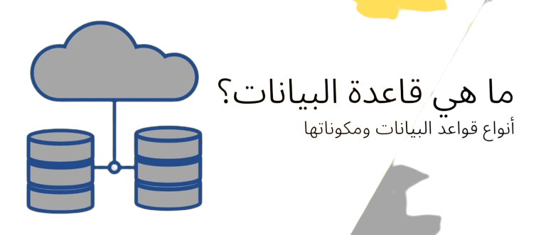

قواعد البيانات
 قاعدة البيانات :هي مجموعة من عناصر البيانات المنطقية المرتبطة
مع بعضها البعض بعلاقة رياضية
وتتكون قاعدة البيانات من جدول واحد وأكثر
| PHP | SQL Server |
 بي إتش بي (PHP: Hypertext Preprocessor) («المعالج المسبق للنصوص الفائقة») كانت مجموعة من التطبيقات التي كتبت باستخدام لغة بيرل أطلق راسموس اسم Personal Home Page Tools الصفحة الرئيسية الشخصية هي لغة برمجة نصية صممت أساسًا من أجل استخدامها لتطوير وبرمجة تطبيقات الويب. كما يمكن استخدامها لإنتاج برامج قائمة بذاتها وليس لها علاقة بالويب فقط. |  صُمّمت لغة SQL أو لغة الاستعلامات البنائية لأغراض استرجاع المعلومات من قواعد البيانات، ففي سبعينيات القرن الماضي؛ بدأ علماء الكمبيوتر بتطوير طرق معيارية لمعالجة قواعد البيانات، حيث تمكّنوا من خلال بحوثهم من تطوير لغة ال SQL والتي حازت على شهرتها عندما تمّ اعتمادها من قبل معهد المعايير القومي الأمريكي في عام 1986، ولقد أدّى العمل والتطوير المستمر على قواعد البيانات المترابطة إلى إدخال تحسينات على هذه اللغة، الأمر الذي جعلها واحدة من أكثر لغات قواعد البيانات شهرةً |
| CDB | NoSQL |
قاعدة البيانات السحابية هي خدمة قاعدة بيانات مبنية والوصول إليها من خلال منصة سحابة. توفر العديد من الوظائف نفسها كقاعدة بيانات تقليدية مع مرونة إضافية للحوسبة السحابية. يقوم المستخدمون بتثبيت البرنامج على بنية أساسية سحابية لتنفيذ قاعدة البيانات | تخزن تقنية قاعدة بيانات NoSQL المعلومات في مستندات بصيغة جافا سكريبت اسمها بالانجليزية jason بدلاً من الأعمدة والصفوف التي تستخدمها قواعد البيانات العلائقية. لكي نكون واضحين ، إن قاعدة بيانات NoSQL JSON يمكنها تخزين البيانات واستردادها بدون SQL حرفيًا. أو يمكنك الجمع بين مرونة JSON وقوة SQL للحصول على أفضل اداء |